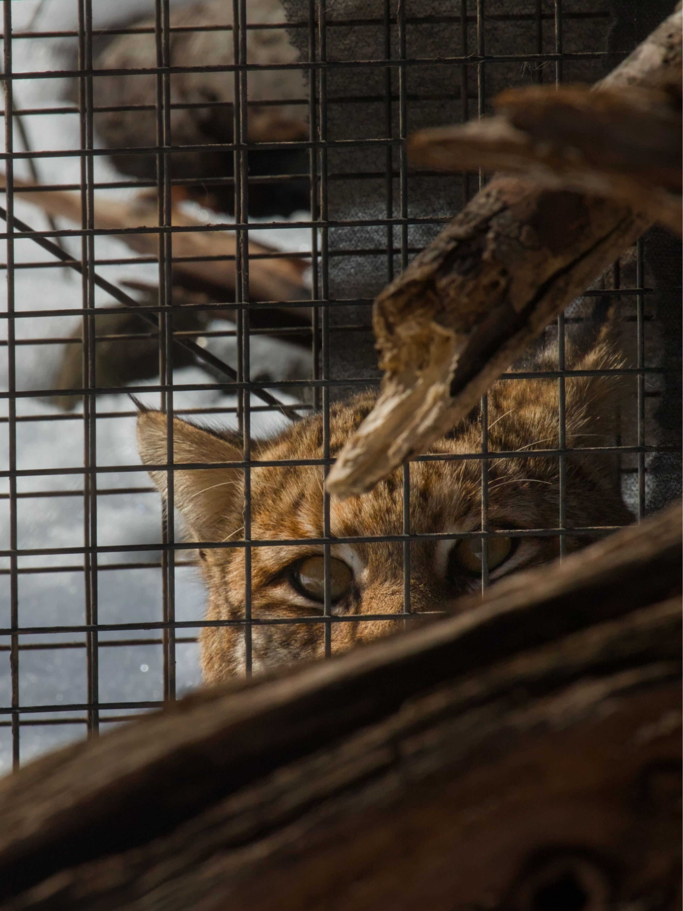
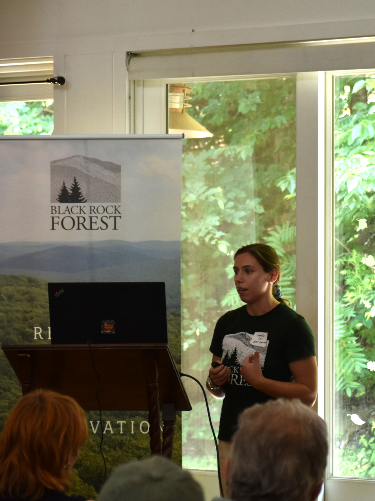

Research Projects

Learn more about my ongoing and past research projects.
Ongoing research projects

Mammal connectivity in the Hudson Highlands
This research is part of the Black Rock Forest Hudson Highlands Wildlife Connectivity Project, which aims to quantitatively assess barriers to the free movements of native carnivores and to identify mitigation strategies to reduce these barriers and facilitate the continued movements necessary to sustain landscape resiliency. As part of this work, I am assessing wildlife space use and functional landscape connectivity.
I will be presenting on different aspects of this research at various conferences this year, including:
- “How long is long enough? Method for defining when animal behavior returns to normal post-trapping” at The American Society of Mammalogists 105th annual meeting in in June.
- “Linking drainage culvert features and roadkill hotspots to wildlife functional connectivity” at the Northeastern Transportation and Wildlife Conference in September.
- [tentative] “Incorporating road permeability into multi-stage, behavior dependent bobcat functional connectivity models” at The Wildlife Society in November.

Modeling deer abundance
Accurately modeling wildlife populations is crucial for effective management. This is particularly true for white-tailed deer (Odocoileus virginianus) populations in the Northeastern United States, where deer are both culturally and historically significant, but often overabundant and damaging to forest health. As climate changes make traditional surveys increasingly challenging and less reliable, we will need to find alternative approaches for monitoring populations. Together with Dr. Scott LaPoint and John Brady, I am working to compare various techniques for measuring deer populations (winter snow tracking, spring pellet counts, and baited and unbaited camera trap surveys) within Black Rock Forest.
Presentations:
- Wall, J.L., J.Brady, & S.D. LaPoint. 2025. Can camera traps replace snow tracking for white-tailed deer (Odocoileus virginianus) in the Western Hudson Highlands? Hudson Highlands Symposium, Black Rock Forest, Cornwall, NY. Link to Hudson Highlands Symposium 2025 abstracts

Climate change threats to alpine wildlife
Climate change is amplified is polar regions and could have considerable consequences for biodiversity. Boreal regions have warmed more than double the global average and are experiencing increasing precipitation, thawing permafrost, shrinking snow seasons, and increasing shrub and tree encroachment. By quantifying the spatiotemporal factors influencing the abundance, distribution, and behavior of key species (namely, Arctic ground squirrels, collared pika, and hoary marmots), we can continue to tease apart complex species-climate relationships to assess species vulnerability.
Publications, Presentations, and Media:
- Wall, J.L. & J.F. Brodie. 2026. Patch quality affords behavioral flexibility in collared pikas (Ochotona collaris), potentially increasing climate resiliency. Oikos. [In press] (Link to pre-print) Data archived in Dryad: doi:10.5061/dryad.gtht76j2v
- Wall, J.L. and J.F. Brodie. 2024. How are climate changes influencing alpine wildlife? The Wildlife Society conference, Baltimore, MD. [presentation]
- Wall, J.L. 2024. A closer look at Denali’s alpine wildlife: Assessing the influenes of climate and vegetation changes on species in Alaska. Graduate Student Theses, Dissertations, & Professional Papers. 12293.
- Citizen Science—The Denali Alpine Wildlife Project - webpage